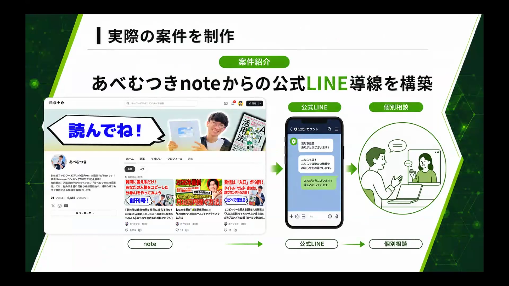
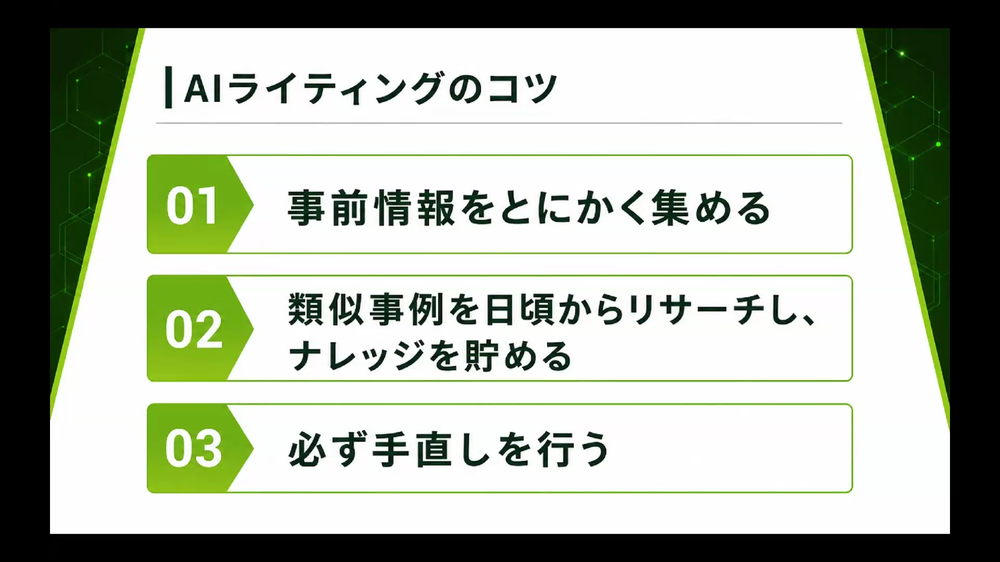
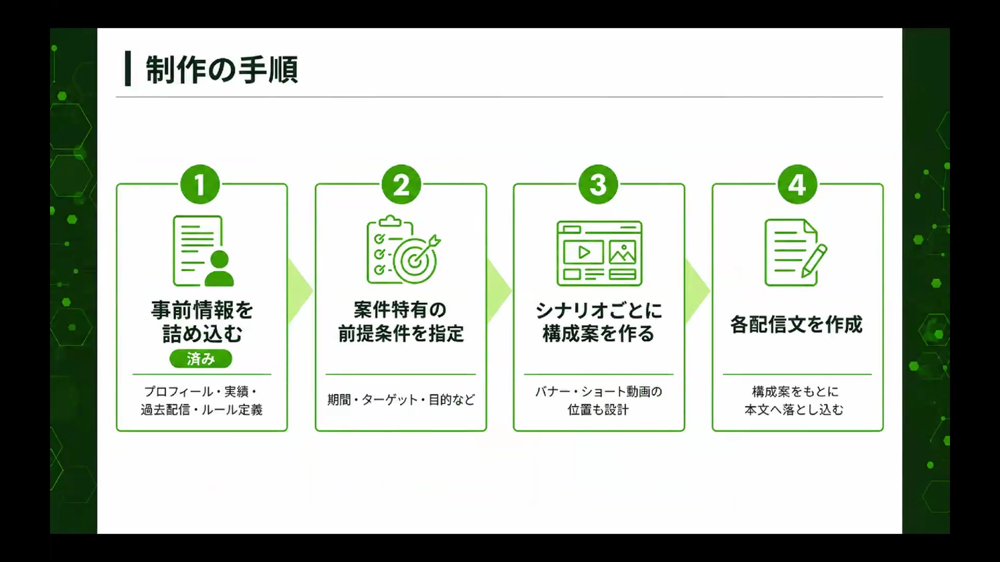
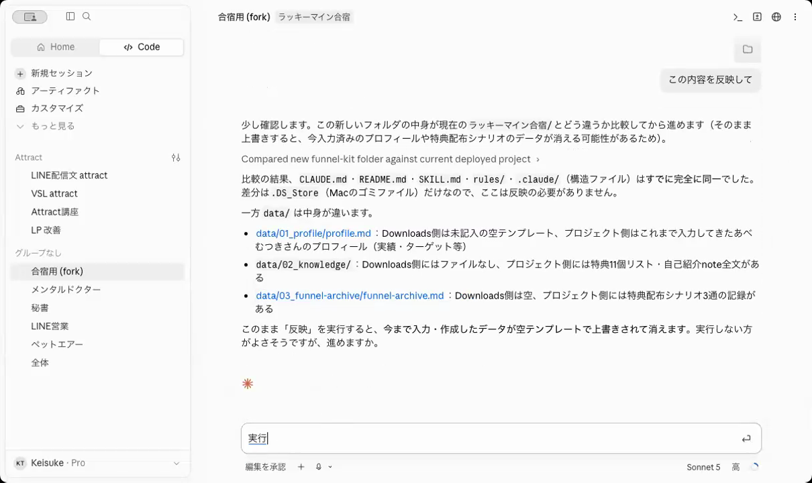
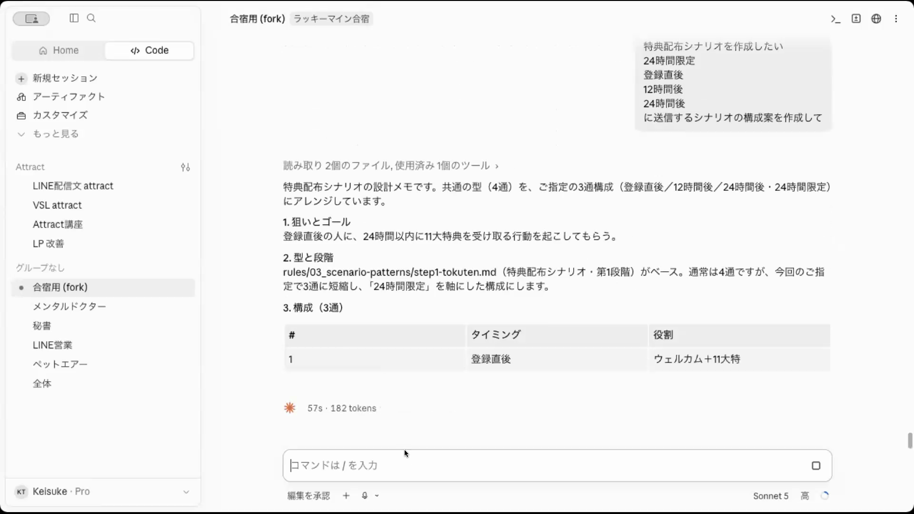
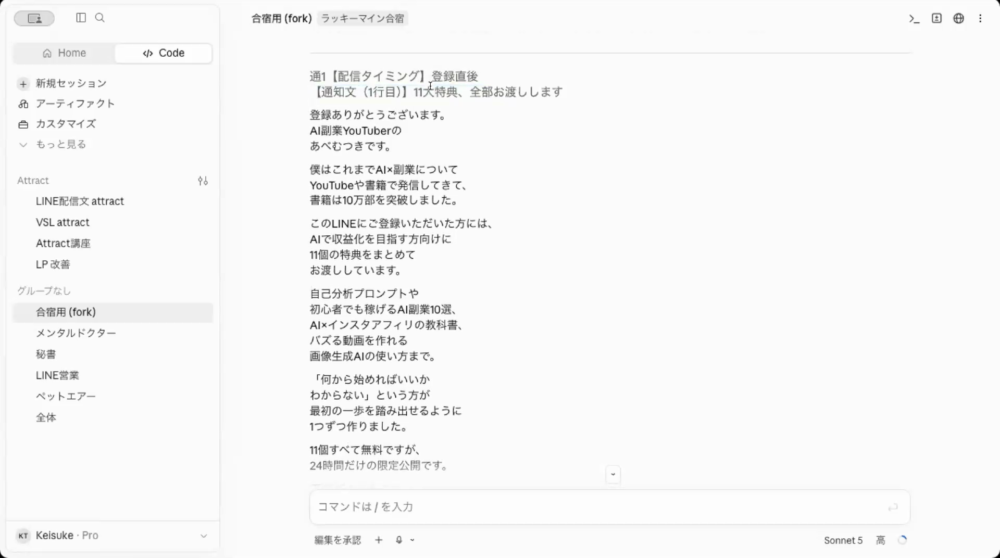
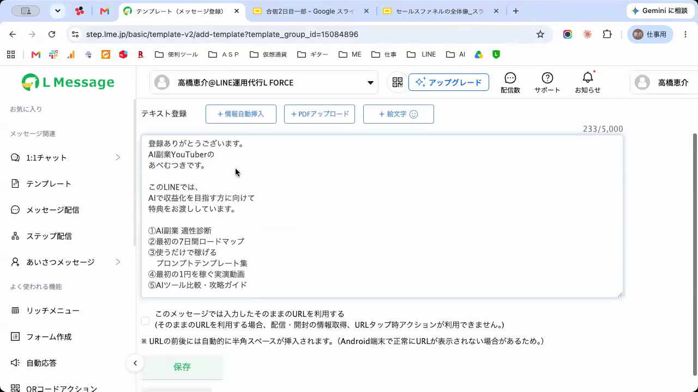
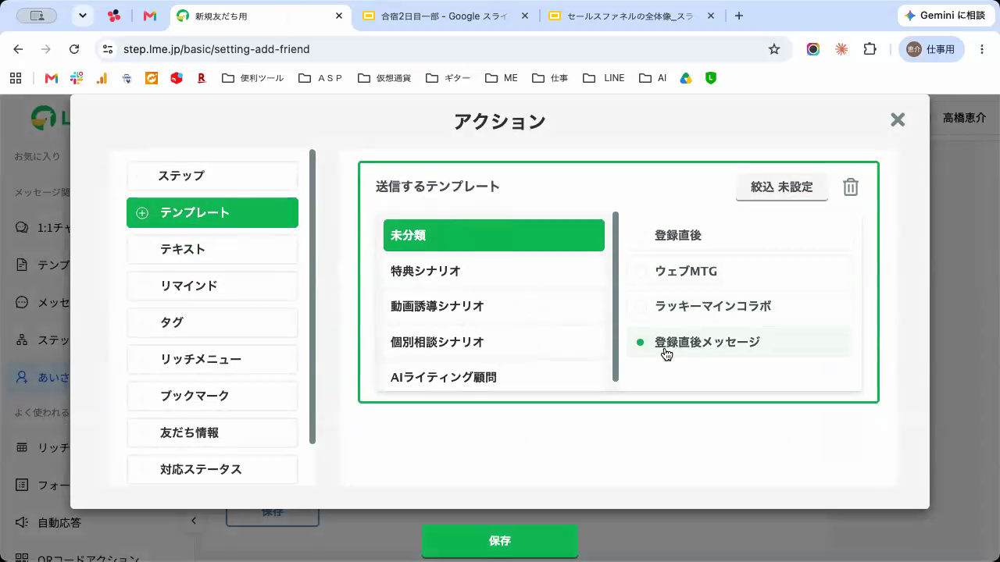

🏁 Day2で何をやったのか — このページのゴール
合宿Day2でやったことは、ひと言でいうと「集めたアクセスをお金に変える入口づくり」です。公式LINEとエルメッセージ（LINE拡張ツール）をつないで、次の状態を全員で作りました。
これができると何が変わるのか。今は、SNSやYouTubeでどれだけアクセスを集めても、見た人はそのまま流れて消えていきます。この仕組みを作ると、各SNSのプロフィールや動画の概要欄に登録リンクを貼っておくだけで、見込み客が「友だちリスト」としてLINEに貯まり続けます。
講義の収益シミュレーションでは、この友だちリストの価値は1人あたり売上6,000円〜12,000円換算という話がありました（根拠は講義動画の#1で確認できます）。つまり、貯まる仕組みを先に作っておけば——
売るものは、後から決めていい。導線だけ先に作っておく。これがDay2の結論で、このページのゴールです。参加していない方・途中でついていけなくなった方も、このページの順番どおりに進めれば同じものが作れます。

STEP0からSTEP7まで、上から順に進めてください。まとまった時間が取れなくても、ステップごとに区切って進められます。
🗺 今回やることの全体像
ゴールが見えたところで、何をどの順番でやるのかの地図です。やることは、この4段だけです。
自分の情報 → 公式LINE → エルメ登録 → 連携 → ファネルキット
文章はAIが作ります。あなたは選んで、コピペするだけ
見込み客をLINEに貯められる状態になりました
進める前に、押さえてほしい前提が5つあります。
完成形のフォルダ構造（見本）
Day1とDay2を合わせると、あなたのフォルダはこうなります。この形を目指します（一部のファイルは省略しています）。
📁 あなたの合宿フォルダ（Obsidianと連携・Day1で作成）
├─ CLAUDE.md ……………… AIの育て方ルール（Day1で配布）
├─ 📁 core ……………………… あなたの情報（Day1で記入）
│ ├─ 01_profile.md …… プロフィール・実績
│ ├─ 02_voice.md ……… 口調・言葉づかい
│ └─ 03_mindset.md …… 考え方・方針
├─ 📁 youtube-kit ………… YouTube投稿づくりの型（Day1で配布）
├─ 📁 insta-kit …………… Instagram投稿づくりの型（Day1で配布）
└─ 📁 funnel-kit …………… LINE配信の全ノウハウ（STEP4で追加）
├─ README.md
├─ 📁 rules ……………… 書き方のルール一式
└─ 📁 data ………………… シナリオ構成などの知識
coreにあなたの情報。youtube-kit・insta-kit・funnel-kitに、それぞれの発信の「型」。あなたの情報と型が揃うと、AIが「あなたの言葉で・売れる型の」文章を作れるようになります。このページで追加するのは、いちばん下のfunnel-kitです。
⚠️ 進め方の大原則
分からなくなったら、AIに聞くのが一番です。
動画を見て手が止まったら、AIに聞くことで進めます。AIは公式サイトの情報なども引っ張ってこられるので、自分で調べ回るより速いです。
聞き方の例（そのままコピーして、状況に合わせて書き換えてOK）
エルメッセージと公式LINEを連携したいです。 今、画面には「◯◯」と表示されています（スクリーンショットも添付します）。 初心者向けに、次にやることを1つずつ教えてください。
Claude Codeにフォルダをアップロードしたら「ファイルが見当たりません」と言われました。 何が原因ですか？ どうすれば解決できるか、1つずつ教えてください。
聞くときのコツ: いま見ているページのURLと、画面のスクリーンショットをそのままAIに送るのがいちばん確実です。「この画面のどこを押せばいい？」というところまで案内してくれます。
- このマニュアルはRISE講座生限定です。外部への共有・再配布はご遠慮ください。
- ツールの画面は更新で変わることがあります。見た目が違っても、あわてずAIに聞けば進めます。
📄 免責事項
本マニュアルは情報提供を目的としたものです。各ツールの画面・仕様・料金は変更される場合があります。お使いの環境（OS・ブラウザ・プラン）によって表示が異なることがあります。
📚 先に「Day1の講義」を見てください（いちばん大事な前提）
このマニュアルに入る前の、必ず守ってほしい前提です。
今回のLINE構築は、文章をぜんぶAI（Claude Code）に作ってもらいます。そのAIがあなたの情報を持っていないと、作成のたびに質問攻めになって、なかなか実践に入れません。
Day1の講義では、その土台を作りました。
今まで情報が垂れ流しで、AIが勝手にいろいろ決めていたところを、あなた自身が管理する——という講座です。先に見てから進めると、このページの理解がまったく変わります。
高橋講師パートの流れ（見る前に）
高橋講師パート（約28分）は、この順番で進みます。
この講義は、既存講座の「RISEセールスファネル講座」（会員サイトでは「AIライティングのやり方」という講座名で掲載）のダイジェスト版にあたります。時間がある方は、本編も合わせて見ておくと理解がさらに深まります。
▶ RISEセールスファネル講座（AIライティングのやり方）を見る
講義で使っているプロンプトをそのまま文章で見たい方は、📄 LINEライティング・プロンプト集もあわせてどうぞ。

自分はどこから始めればいい？（レベル別）
- 発信の方向性がまだ決まっていない方 → Day1の講義で方向性を決めるところから始めてください
- AIに自分の情報がまだ入っていない方 → 下のSTEP0で情報を入れてから進んでください
- Day1のワークが済んでいる方 → STEP0の完了チェックだけ確認して、STEP1へ
マインド講義（あべむつき講師）と分身AI講義（りょうや講師）のアーカイブは、会員サイトのDay1ブロックにあります。
📦 「ファネルキット」とは
このページの途中から「ファネルキット」というものが出てきます。先に正体を説明しておきます。
ファネルキットは、Day2でやる公式LINEのノウハウ——高橋講師のノウハウ——が全て入ったフォルダです。バナーの文章、登録後の挨拶メッセージ、個別相談につなげるステップ配信……そういった文章を作るときの最低限のライティングルールが詰まっています。
だから、何か文章を作るときはファネルキットさえフォルダに入っていれば、「あなたの情報 × キットのノウハウ」で、それ専用の文章が作れます。アーカイブ動画で「挨拶メッセージを作成します」という場面になったら、あなたも同じように指示を出すだけです。
あなたが「こういう構成がいいんじゃないか」と考える必要はありません。考える必要があるのはあなた自身の情報だけ——運用しているジャンル、アカウント情報、何を販売するか、何を紹介するか。
ただし、AIが出した文章をそのまま使うわけではありません。間違っていたらその都度修正して、あなたのノウハウとしてObsidianのフォルダにどんどん貯めていく——ここがDay1「分身を育てる」話につながってくるところです。

STEP 0 Day1で作ったものを、自分のフォルダに揃える
Day2のLINE配信文づくりは、Day1でAIと一緒に作った「あなたの分身」の上に乗っています。分身に情報が入っていれば、特典も挨拶メッセージも最初から「あなたの言葉」で出てきます。まず、Day1の成果物が揃っているかを確認します。
1. 完了チェック（Day1でやったこと、そのままです）
全部YESなら、このステップは完了です。STEP1へ進んでください。
2. まだの方: Day1の導入マニュアルで揃える（いちばん確実）
Day1の内容はすべて導入マニュアルにまとまっています。Day2の全部がこの上に乗るので、時間が取れるならこちらを先に済ませてください。
ワークで使った2つのプロンプト（フォーム）はこちらです。まだの方・作り直したい方はここから回答できます。
📝 タイムマシンプロンプト（理想の一日・12問） 📝 分身AIを作る穴埋めプロンプト（45項目）
3. 今日はLINEだけ先に作りたい方: 普段のAIから最低限の情報をもらう（簡易ルート）
今まで相談してきたAI（ChatGPTなど）には、あなたの情報がメモリとして溜まっています。それをまとめてもらい、最低限の自己紹介資料として使います。普段使っているAIを開いて、下の文章を送ってください。
これまでの会話やメモリにある私の情報をもとに、「AIに渡す自己紹介資料」を作ってください。 以下の項目でまとめてください。 ・プロフィール（名前・肩書き・経歴） ・発信ジャンルとアカウント情報（媒体・フォロワー数・どんな発信をしているか） ・実績（数字があれば数字で） ・ターゲット（どんな人に向けて発信しているか） ・目指している方向性（何を売りたいか・どうなりたいか） まだ決まっていない項目は「未定」と書いてください。
4. もらった文章をDay1のフォルダに入れる
出てきた文章をコピーして、Claude Codeのチャットに貼り付け、「この内容を『自己紹介.md』という名前でフォルダに保存して」と頼めばOKです。
保存できたと返ってきたら、先へ進めます（余裕ができたら、手順2の導入マニュアルで分身をちゃんと作るのがおすすめです）。
つまずいたら: いまの画面のスクショと、見ているページのURLをAIに送って聞く（ページ上部「大原則」の聞き方例）
STEP 1 LINE公式アカウントを作成する
このステップが終わると、あなた専用の公式LINEアカウントができます。事前準備で作成済みの方はSTEP2へ進んでください。オンライン参加の方・当日参加できなかった方はここからです。
この動画では、登録のあとに公式LINE側でやっておく設定もあわせて解説していますが、そこは後からエルメッセージ側でできる内容です。ここではLINEの登録（アカウント作成）までできればOKです。
1. 開設ページを開く
下のボタンからLINE公式アカウントの開設ページを開き、「アカウントを作成」をクリックします。
2. LINEビジネスIDでログインして作成する
普段使っているLINEアカウントでログイン → アカウント名（あなたの発信者名でOK）・業種などを入力して進めます。
「LINE Official Account Manager」という管理画面が開けるようになったら成功です。
アカウント名はあとから変更できます。まずは作ることを優先してください。
つまずいたら: いまの画面のスクショと、見ているページのURLをAIに送って聞く（ページ上部「大原則」の聞き方例）
STEP 2 エルメッセージ（L Message）に登録する
このステップが終わると、LINEマーケティングの道具が手に入ります。
エルメッセージは、よく聞く「Lステップ」のようなLINE拡張ツールです。公式LINEだけではできない「自動のステップ配信」「タグ管理」「流入経路の計測」などができるようになります。無料プランから始められます。
1. 公式の登録マニュアルを開いて、その通りに進める
登録の手順は、エルメ公式マニュアルに全手順のスクリーンショット付きでまとまっています。下のボタンで開いて、「エルメアカウントの作成」の ①〜⑨ をその順番で進めてください（⑨の動画確認まで行けば登録は完了です）。
動画内で紹介している専用リンクから登録すると、無料添削の特典が付きます。プランは、ほとんどの方はフリープランで十分です。最初の段階では、まったく問題ありません。
添削は、一番最初から受けるものではありません。まず自分で一度作ってみて、1回だけ添削を受ける想定の特典です。挨拶メッセージの設定だけでなく、自分の商品・サービスや他の人の商品のアフィリエイトなど、収益化までの導線ができた時点で申請してください。おすすめのタイミングは、Day2の講義（基礎編・発展編）をすべて終えて、有料プランへの変更が必要になったときです。
2. メインページが開けるか確認する
ログイン後、「アカウント一覧」という画面が出た場合は、「メインページに戻る」をクリックしてください。管理画面（メインページ）が開けたら、このステップは完了です。
つまずいたら: いまの画面のスクショと、見ているページのURLをAIに送って聞く（ページ上部「大原則」の聞き方例）
STEP 3 公式LINEとエルメッセージを連携する
このステップが終わると、エルメッセージからあなたの公式LINEを操作できるようになります。合宿でも半数の方がここで詰まりました。作業自体は、STEP2で開いた公式マニュアルの続き（Step.1〜Step.5）です。
1. 先に全体の地図を頭に入れる（迷子防止）
公式マニュアルには難しそうな言葉が出てきますが、やっていることは「公式LINEとエルメをお互いに紹介して、握手させる」だけです。いま自分がどのStepにいるかを、この表で確認しながら進めてください。
| 公式マニュアルの見出し | やっていること |
|---|---|
| Step.1 接続情報の確認 | つなぐ準備。必要な情報のありかを確認する |
| Step.2 LINEログインチャネル作成 | LINE側に「エルメ用の入口」を作る |
| Step.3 API情報入力 | LINE側の情報をコピーして、エルメに貼り付ける |
| Step.4 Webhook設定 | エルメ側の住所をコピーして、LINEに貼り付ける |
| Step.5 接続テスト | 握手できたかを確認する（ここまでやって完了） |
2. 公式マニュアルの「注意点」→ Step.1〜5 を順番に進める
まずページ冒頭の「エルメとLINE公式アカウント接続時の注意点」を読んでから、Step.1〜5を画面のスクリーンショットの通りに進めてください。
3. 成功判定
Step.5の接続テストで、自分のLINEにテストメッセージが届いたら連携成功です。ここまで来たら、このマニュアルでいちばんの山は越えました。
4. どうしてもつまずいたら — AIに公式マニュアルごと渡して、一緒に進める
公式マニュアルを見ても進めなくなったら、マニュアルのURLごとAIに送って、伴走してもらうのが確実です。下の文章をそのまま送ってください。
エルメッセージと公式LINEの連携をやっています。 この公式マニュアルの手順を、一つずつ一緒に進めるのを手伝ってください。 https://lme.jp/manual/register/ いま「Step.◯」まで進んでいます。次に何をすればいいか、1つずつ確認しながら教えてください。
迷ってどこにいるか分からなくなったときは、いま自分が開いているページのURLと画面のスクリーンショットをAIに送れば「いまここですよ。次はここを押してください」と案内してくれます。AIに聞きながら1つずつ進めれば、確実にゴールできます。
つまずいたら: いまの画面のスクショと、見ているページのURLをAIに送って聞く（ページ上部「大原則」の聞き方例）
STEP 4 ファネルキットをClaude Codeのフォルダに入れる
このステップが終わると、AIが「合宿の全ノウハウ」を使えるようになります。冒頭の「完成形のフォルダ構造」に到達するステップです。
1. ファネルキット（zip）をダウンロードする
下のボタンからダウンロードしてください（オープンチャットの配布は流れてしまうため、このページが保存版です）。
📦 ファネルキット（funnel-kit.zip）をダウンロード
2-A. zipを解凍する（Macの方）
ダウンロードしたzipファイルをダブルクリックします。同じ場所に「funnel-kit」フォルダができます。
2-B. zipを解凍する（Windowsの方）
ダウンロードしたzipファイルを右クリック →「すべて展開」をクリックします。

3. Day1のフォルダに、フォルダごと入れる
解凍してできた「funnel-kit」フォルダを、Day1で作ったObsidian連携フォルダの中にフォルダごとドラッグ＆ドロップします。中身のファイルだけを移すのではなく、フォルダごとです。
4. Claude Codeに反映を頼む
フォルダに「funnel-kit」を追加しました。 この中身をすべて確認して、今後のLINE配信文の作成に使えるように反映してください。
「反映しました」「確認しました」といった返事が来たら成功です。実行してよいか確認されたら、そのまま実行してもらってください。

「ファイルが見当たりません」と言われたらzipを解凍していないか、中身の一部だけを渡しています。解凍した「funnel-kit」フォルダごと入れ直してください。「復元できます」と出たら「復元してください」と返信すればOKです。
つまずいたら: いまの画面のスクショと、見ているページのURLをAIに送って聞く（ページ上部「大原則」の聞き方例）
STEP 5 特典を決めて、挨拶メッセージを作る
このステップが終わると、「LINE登録ありがとうございます＋特典はこちら」という1通目の文章が完成します。
1. 特典のアイデアを出してもらう
公式LINEの登録特典のアイデアを5つ考えてください。 私の発信ジャンルとアカウント情報をもとにお願いします。
5つの候補が出てきます。「自分のジャンルの人が一番欲しがりそうで、自分が用意できるもの」を1つ選んでください。迷ったら仮でOKです（あとから変えられます）。
2. 挨拶メッセージを作ってもらう
特典「◯◯」を配布する、LINE登録直後の挨拶メッセージを作ってください。 ・売る商品はまだ決まっていないので、特典を渡すことだけが目的です ・バナー画像はまだ無いので、URLで受け取ってもらう形にしてください
完成した文章が出てきたら成功です。この文章は次のSTEP6で使うので、そのままにしておいてください。

AIがあなたの情報を聞いてきたら、STEP0に戻って自己紹介資料を入れてください。情報が入っていれば、聞かれずに一気に進みます。
文章づくりのAIは、どれを使ってもOKです。会員サイトの講座動画「AIライティングのやり方」はClaudeのプロジェクト機能で作っていますが、入っているノウハウはファネルキットと同じものです。Claude Codeでも、Claudeでも、普段使っているAIにキットを入れて作っても大丈夫。ただ今回は、Day1の分身AIとつなげるためにClaude Codeで全部管理するのがおすすめです。知識がどんどん溜まって、使うほど充実していきます。
つまずいたら: いまの画面のスクショと、見ているページのURLをAIに送って聞く（ページ上部「大原則」の聞き方例）
STEP 6 エルメッセージに設定して、自動で送られるようにする
このステップが終わると、友だち追加された瞬間に、さっきの挨拶メッセージが自動で送られるようになります。やることはコピペと選択だけです。
1. テンプレートを作る
エルメッセージの左メニューから「テンプレート」→「新規作成」をクリック。管理名に「登録直後メッセージ」と入力して「テンプレート作成」→「メッセージ追加」をクリックします。
テキスト入力欄が出るので、STEP5で作った挨拶メッセージをコピーして貼り付け、「保存」→「一覧に戻る」。

2. 挨拶メッセージに設定する
左メニューの「あいさつメッセージ」→「新規友だち用」を開き、下にある「アクション追加・編集」（青いボタン）をクリック。左の一覧から「テンプレート」を選び、さっき作った「登録直後メッセージ」を選択して「保存」します。

あいさつメッセージの設定画面に、テンプレート名が表示されていれば成功です。
テンプレートを作っただけでは、何も送られません。合宿でいちばん多かった止まり方です。「あいさつメッセージへの設定」までがワンセットです。
いま設定した「友だち追加されたら、このテンプレートを送る」のような仕組みを、エルメッセージではアクションと呼びます。エルメの機能はほぼ全部「◯◯したら△△する」というアクションの組み合わせです。この考え方は発展編でくわしく使います。
つまずいたら: いまの画面のスクショと、見ているページのURLをAIに送って聞く（ページ上部「大原則」の聞き方例）
STEP 7 テスト登録して、特典が届くのを確認する（ゴール）
最後に、自分で登録してみて、ちゃんと動くかを確かめます。
1. 自分のスマホで友だち追加する
LINE公式アカウントの管理画面から友だち追加用のQRコードを表示して、自分のスマホで読み取り、友だち追加します。
2. 届いたかを確認する
追加した直後に、STEP5で作った挨拶メッセージが届いていたら——完成です。
3. 特典ファイルの置き場所（まだ用意していない方へ）
特典がPDFやスライドの場合は、Googleドライブに置いて共有リンクを発行し、そのURLを挨拶メッセージの受け取りリンクに差し込めばOKです。
🎉 ここまでできていれば素晴らしいです。今の発信に加えて、見込み客をLINEに貯めておける状態になりました。まずは各SNSのプロフィールや動画の概要欄に、登録リンクを貼るところから始めてください。友だちが1人増えるたびに、あなたの資産が増えていきます。
つまずいたら: いまの画面のスクショと、見ているページのURLをAIに送って聞く（ページ上部「大原則」の聞き方例）
🚀 次のステップへ（レベル別）
あなたの状況に合わせて、次に進む場所が変わります。
発展編で扱う内容:

導線さえできていれば、売るものは後から決められる。